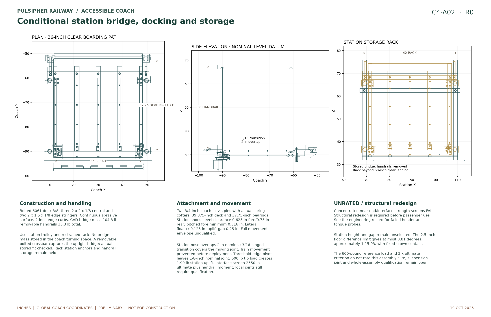
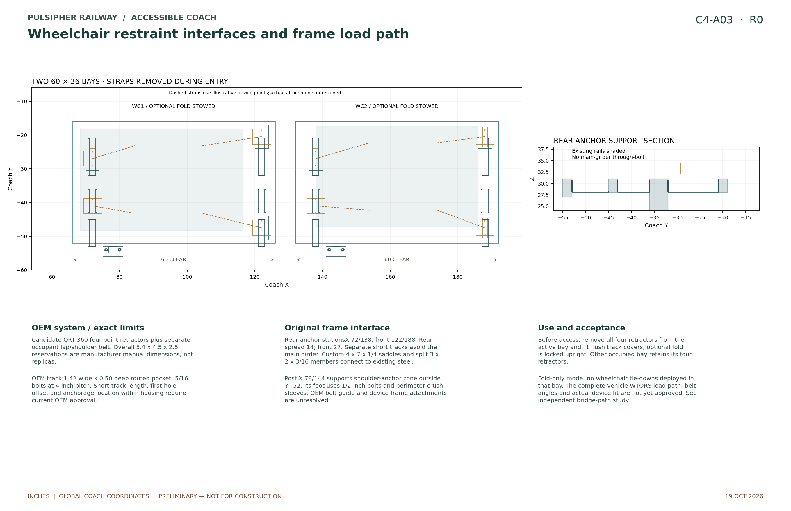
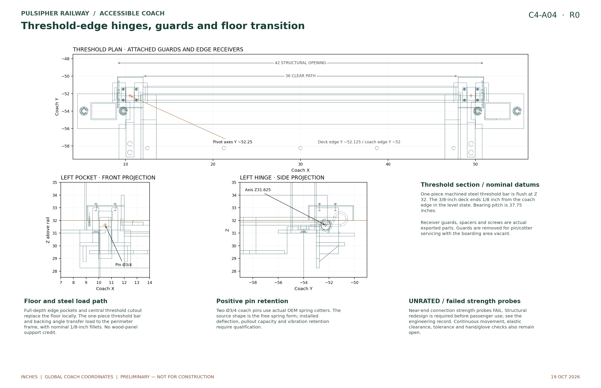

C4 · R0 · 19 OCTOBER 2026
Accessible coach: side doorway and boarding
The accessible entrance is a side doorway into the front turning area: a 42-inch structural opening with a 36-inch clear boarding passage between the low edge hardware and bridge curbs. A removable station bridge connects the platform to the coach; the two wheelchair bays remain inside the coach.
Side loading follows the owner’s direction. Negative-Y handing is provisional; boarding and unloading use the same physical side at both stations. The bridge is conditional on compatible station height and gap. Connection screens include failing concentrated-load probes; no bridge load rating is issued. This issue is not a determination of ADA compliance.
Dimensioned drawings
 C4-A01Side doorway, end doors and mechanical hardware
C4-A01Side doorway, end doors and mechanical hardware

C4-A02Station bridge, dock connections and handrails

C4-A03Wheelchair securement foundations and maneuvering

C4-A04Threshold-edge hinges, guards and floor transitionInspect the actual components
Side entry into the turning area
The structural side opening is X9–51 inches, ahead of both wheelchair bays. The unobstructed lower boarding passage is X12–48 inches, or 36 inches, between the curb and hinge-cover zones. The side leaf swings outward and is held against the exterior before the bridge is installed. Side loading describes the entrance location; this proposal uses a hinged leaf. The 36-inch clear end doors remain separate, offset to the interior route.
Normal boarding opens the side door while both end doors stay closed. The door drawings show hinge tabs and bores, retained hinge pins, mounted manual slide-bolt guides and positive hold-open hardware. Each bolt is operated and checked independently; a disconnected handle is not used to imply a linked latch.
Bridge and station connections
The bridge deck is 39.875 inches long, 36.5 inches overall and 3/8 inch thick, with 36 inches clear between curbs. The two coach hinge axes sit at the doorway edges, X10.5/49.5, Y−52.25, Z31.625 inches. The station bearing at Y−90 gives a 37.75-inch bearing pitch. Three central 2 × 2 × 1/8-inch stringers and two outer 2 × 1.5 × 1/8-inch rails support the deck. Bolted 2 × 2 × 1/8-inch transverse box beams connect the stringers to the end supports through actual cleats, sleeves and fasteners. The threshold pocket, pinned coach dock, station keeper, handrail sockets and retained pins are individual parts.
The nominal coach joint is 1/8 inch. At the conditional ±2.5-inch station height difference, the bridge angle remains within 3.81 degrees (about 1:15.03 at the steeper limit) and the nominal joint varies about 0.100–0.150 inch. The calculated tip-height change is under 0.01 inch. A welded steel angle and riser support the flush threshold; removable covers guard the edge hinges. The station transition hinge still requires a continuous tread cover over its knuckle gaps. These are geometric checks, not an accepted boarding envelope. Station structure, final platform height, gap, slope, slip resistance and the required loaded and unloaded conditions remain to close. A bridge cannot make an arbitrary platform height accessible.
This arrangement uses a station-owned bridge. A complete onboard lift is not selected. Purchased restraint storage and commercial restraint components are labeled as reservations wherever supplier details remain unavailable.
Wheelchair securement attaches to the structure
Each bay has four short OEM track mounting zones with bolted steel backing saddles. The layout avoids putting a fabricated cross-track through the main longitudinal girder. Shoulder-anchor posts and their floor roots are separate physical parts; the final OEM upper fitting interface remains a hold.
The Q’Straint QRT-360 family is the selected development lead. OEM retractors, occupant belts, compatible wheelchair attachment points and their complete installed-system evaluation remain necessary. Track-hole geometry follows the manufacturer’s 82-degree countersink, 5/16-inch bolts and four-inch pitch; a custom short length and first-hole location require supplier confirmation.
Retractors are removed from the entering bay during access and retained in storage. Illustrative strap paths and the 30 × 48-inch wheelchair proxy do not validate a particular wheelchair or occupant restraint geometry.
A path to either bay
The maneuvering check uses forward travel, reversing and rotation about the rear axle of a 30 × 48-inch proxy. Each path is checked with the other bay occupied at its final parked pose, with fixed-seat leg reservations, bridge edges, handrails and the wider C3.1 lock heads included.
Each route enters straight until the whole proxy clears the hinge guards, turns in the front area, then reverses toward its bay. Both use one travel-direction reversal and no sideways translation. Conservative continuous-clearance bounds are approximately 0.647 inch to bay 1 and 0.434 inch to bay 2, rounded down. These remain narrow model margins; actual devices, construction tolerances and occupied maneuvering trials are still required.
| Item | Coordinated layout |
|---|---|
| Wheelchair bays | X66–126 and X132–192; Y−52 to −16 in |
| Continuous route | Y−12 to +24 in; 36 in clear reservation |
| Turning area | Front X0–60 in |
| Bay 1 parked proxy | Center X92.5 / Y−33.2111 in; facing +X |
| Bay 2 parked proxy | Center X161.9991 / Y−32.3154 in; facing +X |
| Capacity | 13 passengers excluding crew in every layout mode |
Editable CAD and part records
Gzip downloads contain the named file with its original geometry and units. Decompress before importing STEP into CAD. Nominal dimensions and material candidates do not replace released fabrication tolerances or acceptance records.